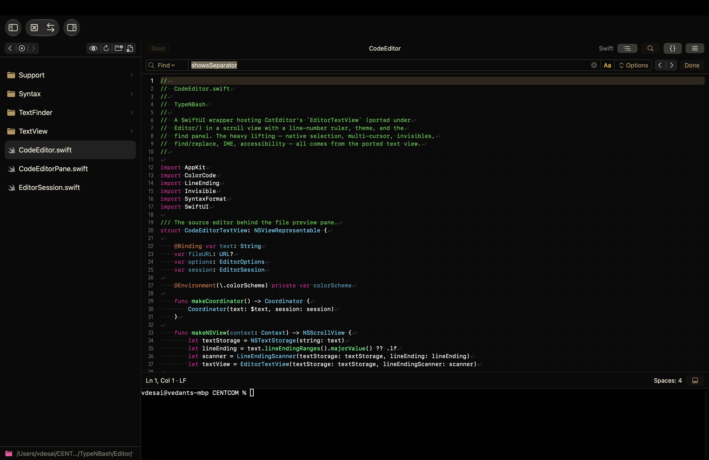
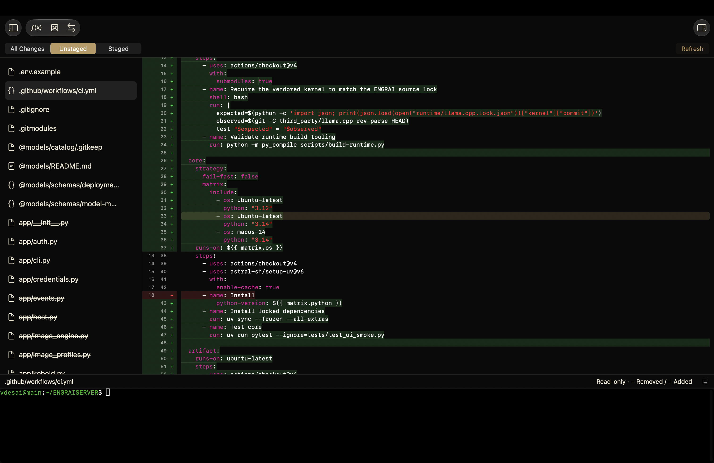
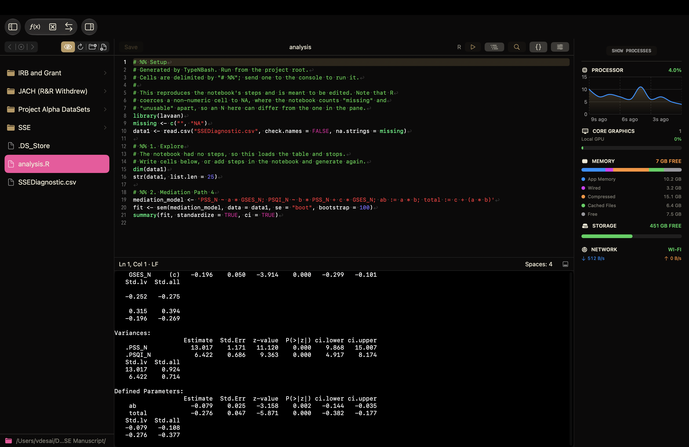

Edit & execute
Syntax highlighting, find and replace, and a console beside your editor. Send a selection or a # %% cell to the console without switching applications.
A native workspace for macOS
Code, commands, and data.
One place to work.
Write a script, work on a remote machine, or explore a dataset. Bring your editor, terminal, files, and statistical notebook together in a native Mac workspace.

Keep your context
Syntax highlighting, find and replace, and a console beside your editor. Send a selection or a # %% cell to the console without switching applications.
Open a folder on your Mac or connect over SSH. Browse remote files and use a remote terminal, with saved connection profiles and key, agent, or password authentication.
A project carries its name and output location with its folder. Create a new project, initialize an existing directory, or open an ordinary folder as it is.
Project guideInspect diffs, stage files, commit, fetch, and push in local projects. For remote repositories, use Git directly in the SSH terminal.
Data analysis
Explore an editable grid, filter the rows, and build an analysis step by step in Notebook. Native statistics run without a Python or R installation.
Descriptive statistics, frequencies, and cross-tabulations.
One-sample, independent-samples, and paired t-tests; one-way ANOVA.
Pearson and Spearman correlations, linear regression, and chi-square tests.
Export a Markdown report or generate an R script to run in your project console.
A closer look


Make it your workspace